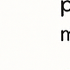

- Promenade des Anglais — Bord de mer emblématique, idéale pour une balade à pied ou à vélo.
- Vieux-Nice — Ruelles pittoresques, marchés colorés et ambiance méditerranéenne.
- Colline du Château — Vue panoramique sur la baie de Nice, cascades et jardins.
- Villefranche-sur-Mer — Charmant village côtier accessible en train ou en voiture.
- Manger de la socca — Spécialité niçoise à base de pois chiches, à déguster au marché ou chez René Socca.